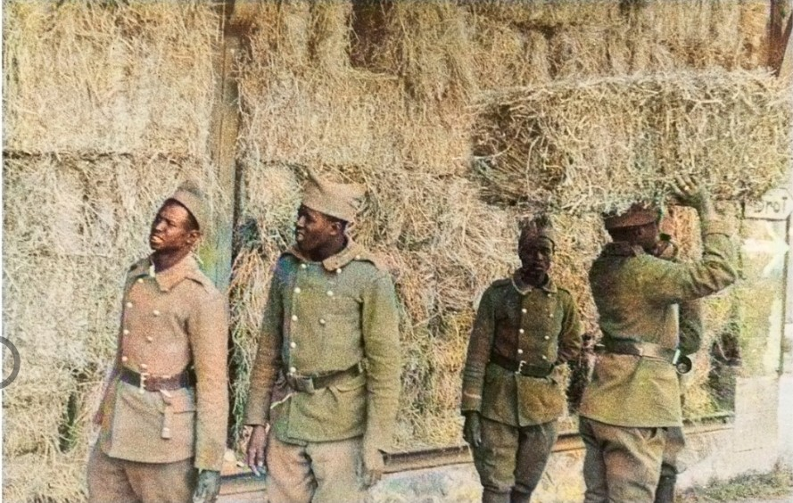
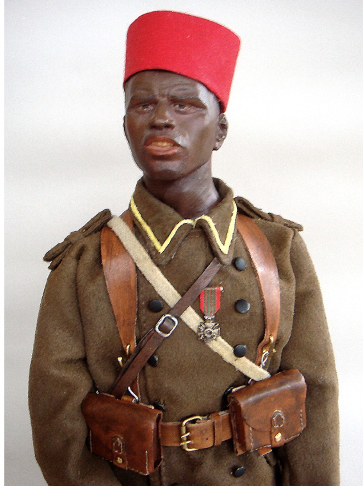
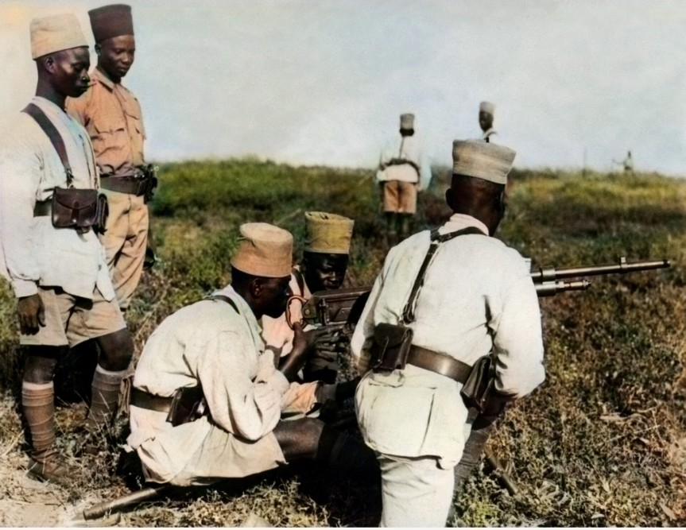

Les Tirailleurs Sénégalais sont des unités d’infanterie coloniale recrutées en Afrique de l’Ouest. En 1939–1940, ils participent à la défense de la France, aux opérations en Afrique, au Levant et en Indochine. Leur uniforme mélange éléments français et pièces traditionnelles.
Leur tenue est immédiatement reconnaissable grâce à la chéchia rouge, symbole historique de ces troupes.


L’armement est identique à celui de l’infanterie française, avec une forte présence du MAS‑36 et du FM 24/29.
Les Tirailleurs Sénégalais adaptent leur tenue selon les climats :